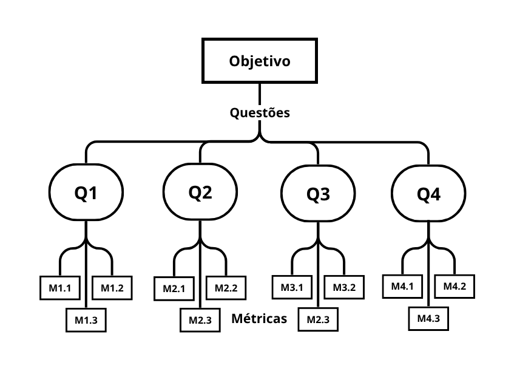

Fase Definição¶
Objetivo de negócio do Agromart¶
Facilitar o escoamento da produção da agricultura familiar por meio de uma solução tecnológica que conecta agricultores e consumidores, promovendo sustentabilidade e segurança alimentar.
Objetivo de Medição 1¶
| Analisar | o Agromart |
|---|---|
| Para o propósito de | entender o contexto da aplicação |
| Com respeito a | usabilidade do aplicativo |
| Do ponto de vista da | equipe de desenvolvimento |
| No contexto de | disciplina Qualidade de Software |
Questões Objetivo de Medição 1¶
Q1: O design da interface do Agromart está alinhado aos princípios de usabilidade definidos pelas heurísticas de Nielsen?
Hipótese Q1: A interface do Agromart está sendo construída com foco em simplicidade, acessibilidade e navegação intuitiva.
Métricas para Q1:
- M1.1: Quantidade de violações de usuabilidade observadas após revisões no design.
- M1.2: Taxa de aprovação dos protótipos por desenvolvedores em revisões.
- M1.3: Número de inconsistências de navegação encontradas nos testes.
Q2: As funcionalidades do Agromart são intuitivas para os fluxos básicos de operação?
Hipótese Q2: Os principais fluxos (como cadastro de produtos, compra e venda) são compreensíveis sem a necessidade de treinamento intensivo.
Métricas para Q2:
- M2.1: Tempo médio para completar os fluxos principais durante testes de usabilidade.
- M2.2: Quantidade de passos necessários para realizar operações críticas.
- M2.3: Número de dúvidas levantadas pela equipe durante as fases de testes.
Q3: O desenvolvimento do Agromart está garantindo a acessibilidade da interface para diferentes perfis de usuários?
Hipótese Q3: O design e os componentes da aplicação estão sendo desenvolvidos levando em consideração diferentes perfis de usuários (como agricultores e consumidores com variados níveis de familiaridade com tecnologia, independente da idade).
Métricas para Q3:
- M3.1: Número de ajustes realizados para melhorar a acessibilidade.
- M3.2: Taxa de sucesso dos testes de usabilidade focados em acessibilidade.
Q4: A documentação técnica está sendo clara e suficiente para orientar o desenvolvimento focado em usabilidade?
Hipótese Q4: A documentação está permitindo que os desenvolvedores entendam claramente os requisitos de usabilidade para cada módulo do Agromart.
Métricas para Q4:
- M4.1: Número de inconsistências encontradas entre a documentação e o desenvolvimento implementado.
- M4.2: A documentação, em relaçãoa objetivos de usabilidade, estão atualizadas com o cenário atual do projeto.
Relação entre objetivos de medição – Questões e Métricas¶

Abstraction sheets¶
| Objeto | Propósito | Foco de Qualidade | Ponto de Vista |
|---|---|---|---|
| Agromart | Entender o contexto da aplicação | Usabilidade | Equipe de desenvolvimento |
| Foco de Qualidade | Fatores de Variação |
|---|---|
| ● A interface está alinhada a princípios de usabilidade (simplicidade, acessibilidade, navegação intuitiva). ● Os fluxos operacionais são intuitivos e não exigem treinamento intensivo. ● A interface é acessível para diferentes perfis de usuários (agricultores e consumidores). ● A documentação técnica é clara e suficiente para guiar o desenvolvimento. |
● Nível de experiência dos usuários. ● Requisitos de acessibilidade. ● Frequência de revisões de usabilidade. ● Clareza da documentação técnica. |
| Hipóteses Base (estimativas) | Impacto dos Fatores de Variação |
|---|---|
| ● Interface com foco em simplicidade, acessibilidade e navegação intuitiva. (Q1) ● Os fluxos principais são compreensíveis sem necessidade de treinamento intensivo. (Q2) ● O design considera diferentes perfis de usuários (agricultores, consumidores com baixa familiaridade tecnológica). (Q3) ● Documentação clara e suficiente (Q4). |
● Usuários com menor familiaridade digital podem ter mais dificuldades com a navegação. ● A falta de requisitos de acessibilidade pode comprometer a experiência de usuários com deficiências. ● Revisões frequentes aumentam a consistência e a qualidade da usabilidade. ● Documentação mal elaborada pode gerar dúvidas e inconsistências no desenvolvimento. |
Tabela de contribuições¶
| Matrícula | Nome Completo | Contribuição (%) |
|---|---|---|
| 222006534 | Anna Clara Cardoso Evangelista Brandão | 18.0 |
| 231011220 | Davi Camilo Menezes | 10.0 |
| 221022050 | Larissa de Jesus Vieira | 18.0 |
| 221008356 | Maria Eduarda Vieira Monteiro | 18.0 |
| 221022417 | Paulo Henrique Melo de Souza | 18.0 |
| 221031238 | Victor Augusto de Sousa Câmara | 18.0 |